A complete guide to running the PRDF Loan Management System
Document
Admin Console — Administrator’s Manual
Date
1 October 2026
Audience
SuperAdmin and Admin users
Web address
https://prdf-admin.vercel.app
Companion
PRDF Client Portal — User Manual
Purpose
Operating manual and acceptance record
Every screenshot was captured from the working system by walking a real application
from submission to disbursement. Figures are test data. Personal data on the
User Access screen has been masked.
Contents
1 About this manual
2 The system at a glance
3 Roles and what each can do
4 Signing in and access control
5 The application lifecycle
6 Dashboard
7 Pipeline
8 The case file — Overview
9 Documents tab
10 Advancing a case
11 Pricing tab and the risk grade
12 The credit model in full
13 Money tab — disbursement
14 Money tab — repayments
15 History, Tasks, Notes, Advisory
16 Loans and Portfolio
17 Reports
18 User Access
19 My Profile and notifications
20 What the client sees
21 Your action, their screen
22 After approval — the client's loan
23 What you can change yourself
24 Things to be aware of
25 Acceptance and sign-off
How to use this manual
Read Sections 2–5 once before you start. They explain how the system is put together and who is allowed to do what. Sections 6–19 are your day-to-day reference, following the console screen by screen in the order you will meet them. Sections 20–22 show the applicant’s side of everything you do, so you can help a client who is looking at a different screen from yours. Section 23 covers the settings PRDF can change without a developer. Section 24 is what to be aware of, and Section 25 is the acceptance record.
You need no technical knowledge to use this manual or the console. Where something is handled by PRDF’s technical contact rather than by you, it says so.
One application runs through the whole manual. Blue Harvest Aquaculture (Pty) Ltd — R750 000 over 12 months — was taken all the way from submission to payout to produce these screenshots. You can follow that same case from Section 7 through to Section 14 and watch the numbers agree at every step.
1. About this manual
This manual describes the PRDF Admin Console as a SuperAdmin sees it — which is all of it. It covers every screen, every tab and every control, in the order you will meet them, together with the rules behind them.
It assumes no technical knowledge. If you can use email and a web browser, you can use this console and you can follow this manual. Where something is genuinely out of your hands and belongs to PRDF’s technical contact, the manual says so plainly rather than leaving you to discover it.
Some rules in this manual are suggestions and some are absolute. Where a rule is absolute — where the system will simply refuse, no matter who you are — it is marked as such, because knowing the difference saves you from arguing with a screen that is never going to give way.
1.1 What a SuperAdmin can do that others cannot
See every case regardless of who it is assigned to
Move a case to any stage, stepping in for the role that normally owns that stage
Grant and remove roles, including Admin
Reset someone’s two-step sign-in, so they can set it up again on a new phone
Move money — pay out a loan and record repayments against it
Read every report, and the full history of who did what
Stepping in for another role is a SuperAdmin-only power, and the one to treat with respect. You can move a case forward even when the person whose job it is has not yet signed it off. The system will not stop you, and it will record permanently that it was you who did it. Use this when something genuinely has to be unblocked — somebody is away, or a case is stuck — and not simply to save a colleague a telephone call. Every stage exists because somebody is accountable for it.
1.2 Other documents
Two of these are written for readers like you. The rest are technical records kept alongside the system, listed here so you know they exist and can ask for them if a question goes beyond this manual.
Document
Covers
PRDF Client Portal — User Manual
The applicant's side in full. Sections 20–22 of this manual summarise it
The credit model
How interest, fees and penalties are worked out, and why
Role definitions
The formal list of roles and what each may do
Testing guide
Step-by-step walkthroughs and the test accounts to use
Operations and support notes
For PRDF's technical contact: how the system is run and what to do when it misbehaves
1.3 Short forms used in this manual
These appear on screen as well as in this document, so they are worth knowing. Everything else is written out in full.
Short form
Stands for
What it means here
PRDF
People’s Republic Development Fund
The lender — you
SLA
Service Level Agreement
The time standard a case is expected to be dealt with in. A case past it is flagged as SLA Breached
NFS
Non-Financial Support
Mentorship, training and compliance help given to a client alongside the loan
MFA
Multi-Factor Authentication
Two-step sign-in — a password plus a code from a phone
POPIA
Protection of Personal Information Act
South African law governing how personal information is handled
CIPC
Companies and Intellectual Property Commission
Where a business is registered; the source of a registration certificate
CSD
Central Supplier Database
The government supplier register; applicants upload their report from it
SARS
South African Revenue Service
The tax authority; the source of a tax clearance certificate
PO
Purchase Order
A confirmed order from a buyer, used as the basis for purchase-order funding
CSV
Comma-Separated Values
A plain spreadsheet file. Export CSV downloads data you can open in Excel
PDF
Portable Document Format
The standard document format applicants upload in
SMS
Short Message Service
A text message
2. The system at a glance
There are two websites. You use one of them; your applicants use the other. They show different things to different people, but they are both looking at the same single set of records — so the moment you change something, the applicant sees the result, and the moment they upload something, it is waiting for you.
Website
Address
Who signs in
Admin Console
prdf-admin.vercel.app
PRDF staff. This manual is about this one.
Client Portal
prdf-lms.vercel.app
Applicants and borrowers. Covered in Sections 20–22, and in its own manual.
Staff and applicants can never cross over. A member of staff cannot sign in to the client portal, and an applicant cannot sign in to the console — not even by typing in the other address. The two are kept separate on purpose.
2.1 How the system decides what you are allowed to do
What you can see and do is decided by the roles on your account, which Section 3 explains. When you sign in, the system looks up your roles and shapes the console around them: screens you have no business seeing are not in your menu, and buttons you are not entitled to press are not on your screen.
Hiding a button is not the same as preventing an action, and the system knows that. Every rule in this manual is checked a second time by the records themselves, underneath the screens. So a rule such as “only Finance may pay out” is not merely a button that has been hidden from you — the payment would be refused even if the button were somehow pressed. When this manual says something is refused or blocked, it means genuinely refused, not just discouraged.
2.2 Where uploaded documents are kept
Documents an applicant uploads are held in private storage, separate from the records that describe them. Nobody can reach a file by guessing its address. Each time you click View, the system creates a fresh, private link that works for a few minutes and then stops working, which is why a link you copied earlier will not open later — open the document from the case again instead.
2.3 The system can serve more than one lender
The platform was built so that other lenders could run on it alongside PRDF, each with its own branding, its own eligibility wording and its own web address. For PRDF this changes nothing day to day. It is worth knowing only because it explains why the branding and some of the public wording are treated as settings rather than as part of the pages themselves.
3. Roles and what each can do
There are eight workflow roles, plus management and administrative roles, plus the client.
3.1 Workflow roles
Each owns one stage of the review chain and sees only the cases assigned to them.
Role
Owns the stage
Responsible for
Intake Clerk
Submitted
Confirming intake and mandatory documents
Program Officer
Screening
Initial screening and compliance checks
Risk Analyst
Due Diligence
Financial and risk assessment — sets the risk grade
Review Committee
Evaluation
Viability and mandate alignment
Program Manager
Evaluation (shared)
Decision-making; may decline at any stage
Board
Approved
Authorising funding; may decline at any stage
Legal
Board Approved
Generating and issuing the loan agreement
Finance Officer
Contracting, Disbursed, In Repayment
Paying out and recording repayments
3.2 Management and administrative roles
Role
What it means
SuperAdmin
Everything, including granting Admin and resetting MFA
Admin
Full case access and any transition; manages user roles
Program Manager, Board
Full case visibility, reports and audit
Client
The applicant. Cannot enter the console at all
3.3 The rules that matter
Only Finance Officer, Admin and SuperAdmin may move money. Anyone else who attempts to pay out or record a repayment is refused.
Only a SuperAdmin may grant Admin.
The Client role cannot be assigned from the console at all — it is granted when someone registers in the portal. This is deliberate: a staff member must not be able to turn a colleague into a borrower.
A Client-only user is blocked from the console, and a user with no Client role is blocked from the portal.
Stage workers see only cases assigned to them. Management roles see everything.
4. Signing in and access control
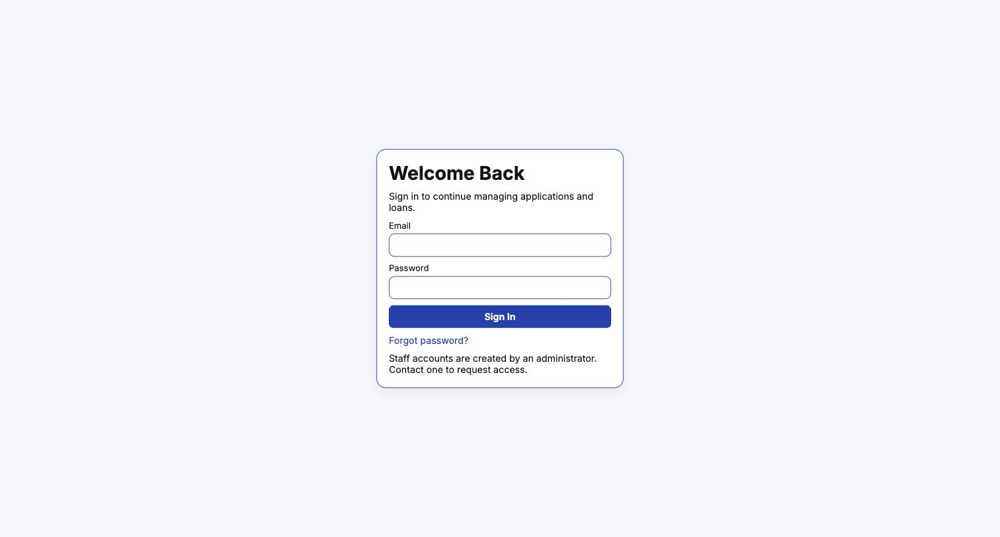
Figure 1 — The console sign-in. Staff accounts are created by an administrator; there is no self-registration.
Sign in with your PRDF email address and password. Your session persists across browser restarts and expires after a period of inactivity. Logout is at the top right of every screen.
4.1 If someone cannot get in
Symptom
Cause and fix
"Access restricted" after signing in
The account has no internal role — only Client. Grant them a role in User Access (Section 18)
Sign-in rejected
Wrong password, or the account does not exist. Staff accounts are created by an administrator
Signed in but every page fails to load
The console cannot reach the system behind it. This is one for PRDF’s technical contact, not something you can fix from the console
Locked out of a second factor
Use Reset MFA in User Access so they can enrol a new device
4.2 Layout
The left sidebar holds the six destinations: Dashboard, Pipeline, Loans, Portfolio, Reports, User Access. The top bar shows who you are signed in as, an alerts bell, your Profile, and Logout. A breadcrumb above the page title shows where you are.
What you see depends on your roles. A Finance Officer does not see User Access; a stage worker sees a shorter Pipeline. This manual describes the SuperAdmin view, which is the complete one.
5. The application lifecycle
Every application moves through a fixed sequence of eleven stages. The rail at the top of each case shows where it is.
Two branches leave the main line at almost any point:
Info Requested — more is needed from the applicant. Returns to Submitted or Screening once supplied.
Rejected — the application is declined. Available from every stage up to Contracting.
5.1 Who may advance what
From stage
Next
Owned by
Draft
Submitted
The applicant
Submitted
Screening, Info Requested, Rejected
Intake Clerk
Screening
Due Diligence, Info Requested, Rejected
Program Officer
Due Diligence
Evaluation, Info Requested, Rejected
Risk Analyst
Evaluation
Approved, Rejected
Review Committee / Program Manager
Approved
Board Approved, Rejected
Board
Board Approved
Contracting, Rejected
Legal
Contracting
Disbursed
Finance Officer
Disbursed
In Repayment
Finance Officer
In Repayment
Closed
Finance Officer
Skipping a stage is genuinely impossible, not merely hidden. You cannot move a case from Submitted straight to Approved by any route at all — the records themselves refuse it. The dropdown only ever offers the moves that are permitted from the stage the case is in now.
5.2 Two gates worth knowing
Submission requires every required document type to be present. This is genuinely enforced, not just discouraged.
Approval requires every required document to be Verified, not merely uploaded. This is the single most common reason an approval is refused — see Section 9.
5.3 When the loan record is created
The loan is created when the case reaches Board Approved, in Pending Disbursement status. That is the moment the rate, days financed and fees are fixed — see Section 11.
6. Dashboard
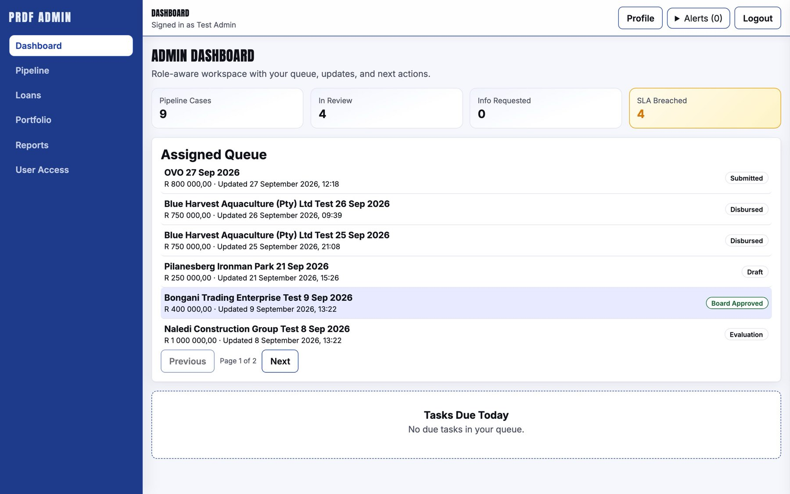
Figure 2 — The dashboard. Four counters, your assigned queue, and tasks due today.
Counter
What it counts
Pipeline Cases
Every open case you can see
In Review
Cases between Screening and Evaluation
Info Requested
Cases waiting on the applicant — these are stalled and need chasing
SLA Breached
Cases sitting longer than the service standard. Highlighted amber
Assigned Queue lists the cases you can act on, newest first, each with its amount, when it last moved, and its status. Click any row to open it. Tasks Due Today shows action items assigned to you (Section 15).
Read the SLA counter daily. It is the only place the console volunteers that work is ageing. A case can sit correctly assigned and entirely untouched for weeks without anything else flagging it.
7. Pipeline
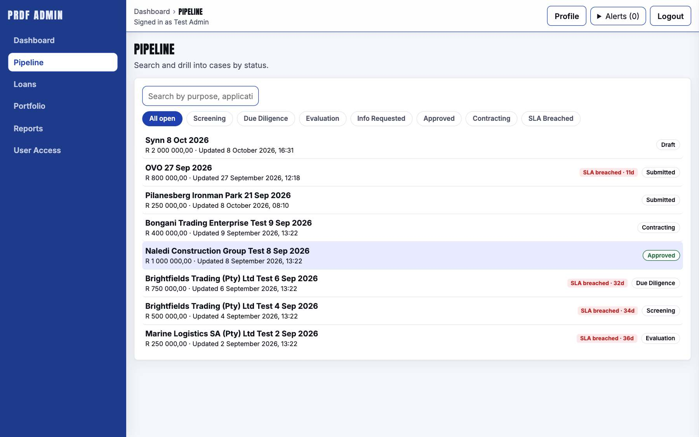
Figure 3 — Pipeline. Search by purpose or applicant; filter by stage with the chips.
Pipeline is the full case list. The filter chips are All open, Screening, Due Diligence, Evaluation, Info Requested, Approved, Contracting and SLA Breached. Cases past their service standard carry a red SLA breached · n days badge.
How a case is named. Every case reads {business name} {applicant's first name} {application date} — "Blue Harvest Aquaculture (Pty) Ltd Test 4 Sep 2026". The name is derived from the record, never stored, so it cannot drift from the client it describes, and the loan inherits it when the application is booked. Pipeline, the case file, My Loans and the applicant's own list therefore all call the same deal the same thing.
Before this, a case was labelled with whatever free text the applicant typed into "tell us more about how you'll use the funds". Older screenshots and any notes written before 28 September 2026 may still refer to cases that way.
7.1 The preview drawer
Figure 4 — Clicking a row opens a preview: applicant, amount, reference, and the lifecycle rail.
The preview is for triage — checking where something is without losing your place in the list. Open full case → goes to the case file; View documents jumps straight to its Documents tab.
8. The case file — Overview
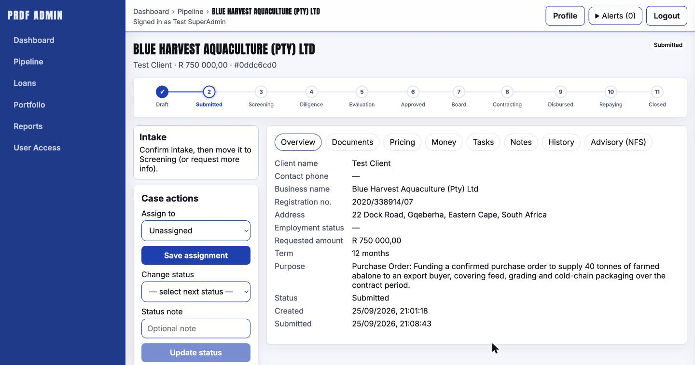
Figure 5 — The case file. Lifecycle rail across the top, guidance and actions on the left, eight tabs on the right.
Every case has the same three parts.
8.1 The lifecycle rail
Eleven numbered stages. Completed stages carry a tick, the current one is highlighted, the rest are greyed. This is the authoritative view of where a case stands.
8.2 The left rail
The top card is stage-aware guidance — it changes as the case moves, and tells you what this stage expects. Beneath it, Case actions:
Control
What it does
Assign to
Assigns the case to a staff member. Click Save assignment to apply
Change status
Offers only the transitions legal from the current stage
Status note
Optional, but see the advice in Section 10
Update status
Applies the transition
Request info
Sends the case back to the applicant with a note saying what is missing
8.3 The eight tabs
Tab
Contents
Section
Overview
Applicant, business, amount, term, purpose, dates
8
Documents
Uploaded documents, inline viewer, verify and reject
9
Pricing
Credit-model quote and the risk grade decision
11
Money
Disbursement, repayments, schedule
13–14
Tasks
Action items against the case
15
Notes
Internal notes
15
History
Full audit trail of transitions
15
Advisory (NFS)
Non-financial support sessions logged
15
9. Documents tab
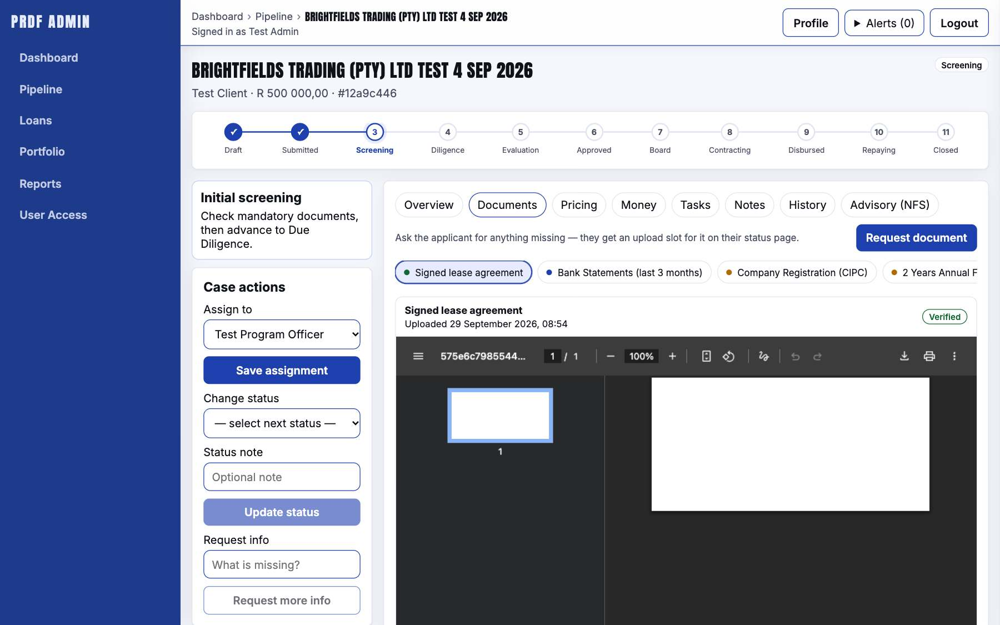
Figure 6 — The Documents tab. Chips across the top are the document types; the selected one opens in an inline viewer.
Each chip carries a status dot. Selecting one loads the file in a viewer so you can read it without downloading. Beneath the viewer: Download, Full screen, Verify and Reject.
9.1 The ten required documents
Document
Several files?
ID Document
No
Proof of Address
No
Company Registration (CIPC)
No
Tax Clearance
No
Bank Statements (last 3 months)
Yes
Financial Statements
No
Vendor Quotations (3x)
Yes
Central Supplier Database (CSD) Reports
No
Purchase Order / Short Term Contracts
No
Trade Reference
No
9.2 Verifying
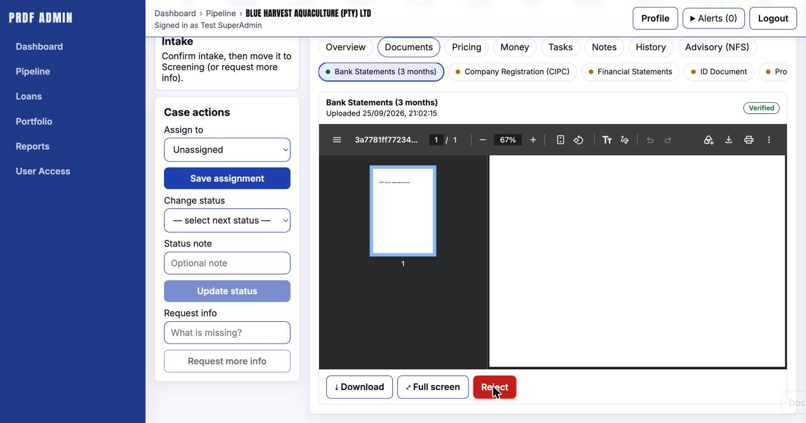
Figure 7 — After verifying: the badge turns green, the chip dot turns green, and only Reject remains.
Approval is blocked until every required document is Verified. Uploaded is not enough. When you try to move a case to Approved, the system checks that every required document has at least one Verified copy, and refuses the move if any is missing. If an approval is rejected and the reason is not obvious, this is almost always why.
9.3 Rejecting a document
Reject marks a document as not accepted. The applicant sees the rejected badge against that document in their portal and can upload a replacement in its place — the slot stays open until they do. Rejecting does not change the case status and does not, on its own, notify them; see 21.2 for what they actually see.
9.4 Requesting a document
Rejecting handles a document that arrived and was not good enough. Request document handles the other case — something that never arrived at all, or something that is on no checklist.
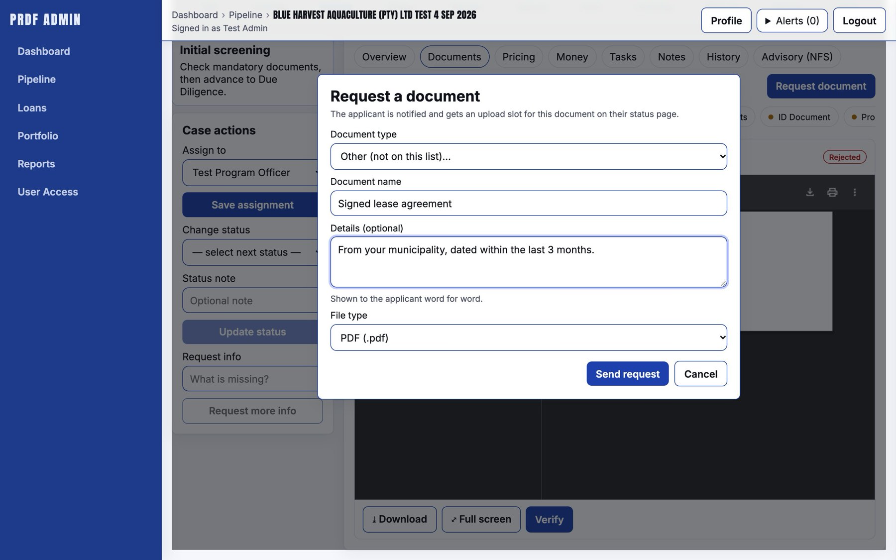
Figure 8 — Request document sits at the top of the Documents tab. The dialog names the document, says where to find it, and fixes the file type the applicant may upload.
The dialog has four fields:
Field
What it does
Document type
One of the ten checklist types, or Other (not on this list). A type with a request already open is shown as "— already requested" so you do not stack two asks for the same thing.
Document name
Appears only for Other, and is required there. This is the name the applicant sees, so write it as they would recognise it — "Signed lease agreement", not "lease".
Details
Optional, shown to the applicant verbatim underneath the document name. Where to find it, or what it has to show.
File type
PDF, Word (.doc or .docx), or any accepted type. This sets what their upload box will accept, so choosing PDF for something only issued as a Word file will block them.
Be specific, in the Details field. "Bank statements unclear — please upload the full three months including August" gets a useful answer. "More info needed" produces another round trip and another week. The Details field is the one the applicant actually reads.
What happens next
The applicant gets an in-app notification and an upload slot on their status page — this is the whole point of the feature, and 21.1 shows it from their side.
The Documents tab tells you what you are waiting for: "Waiting on the applicant for 1 requested document."
When they upload against the request it closes itself and links to the document they sent, which then goes through the normal Verify / Reject flow in 9.2 and 9.3.
If they later delete that document — which they can only do while the application is still a draft — the request reopens rather than sitting there claiming to be satisfied.
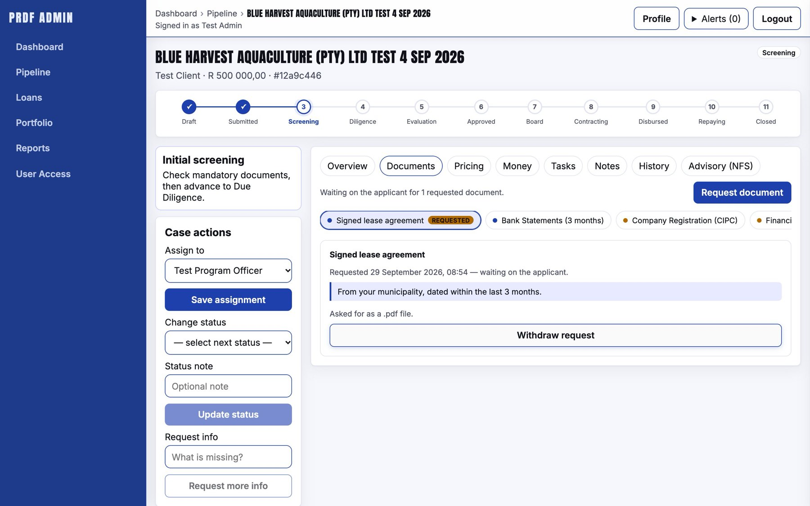
Figure 9 — An open request. The banner names what is outstanding; the request stays visible until it is fulfilled or withdrawn.
Requesting a document does not move the case. It stays in whatever stage it was in. This is deliberate — a reviewer can ask for a payslip without parking the whole application in Info Requested, and an ask the applicant cannot see never gets answered. Use Request info in the left rail when you do want the case to stop and the status to say so.
Withdrawing a request
A request you raised in error is cancelled, not deleted. It stays on the case as part of its history, and the audit trail records both CreateDocumentRequest and CancelDocumentRequest against your name. There is no way to erase one, by design.
10. Advancing a case
Figure 10 — Assign the case, choose the next status, add a note, then Update status.
10.1 The sequence
Assign the case to whoever owns the next stage, and click Save assignment.
Choose the next status from Change status.
Write a status note saying what you checked and why you are moving it.
Click Update status.
Write the note every time. It is optional and it is the single most valuable thing in the case file. The History tab becomes the audit trail of the decision — and when a case is queried months later, or reviewed externally, notes are the only record of why. "Approved at R750 000 over 12 months at 17.00% (Moderate). All required documents verified." takes ten seconds and answers every future question.
10.2 Through the stages
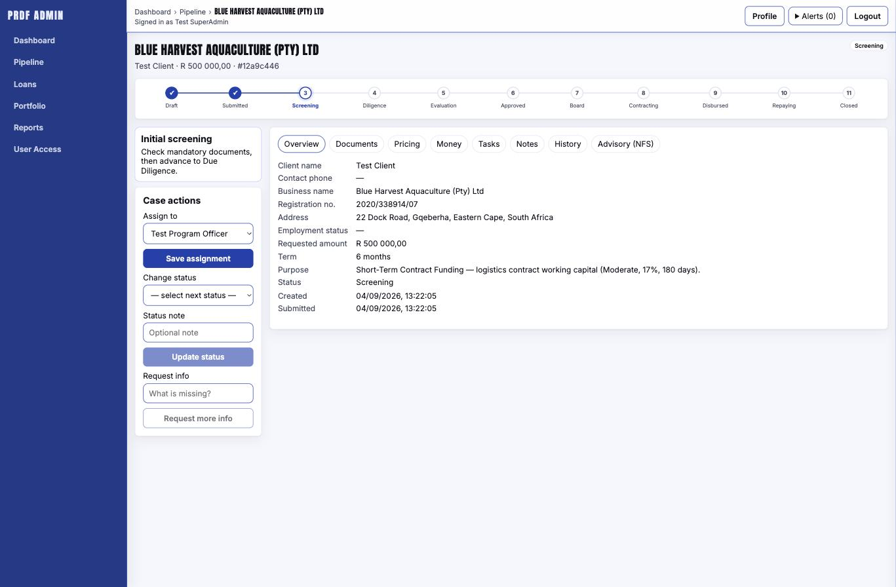
Figure 11 — Screening. The guidance reads "Check mandatory documents, then advance to Due Diligence." Assigned to the Program Officer.
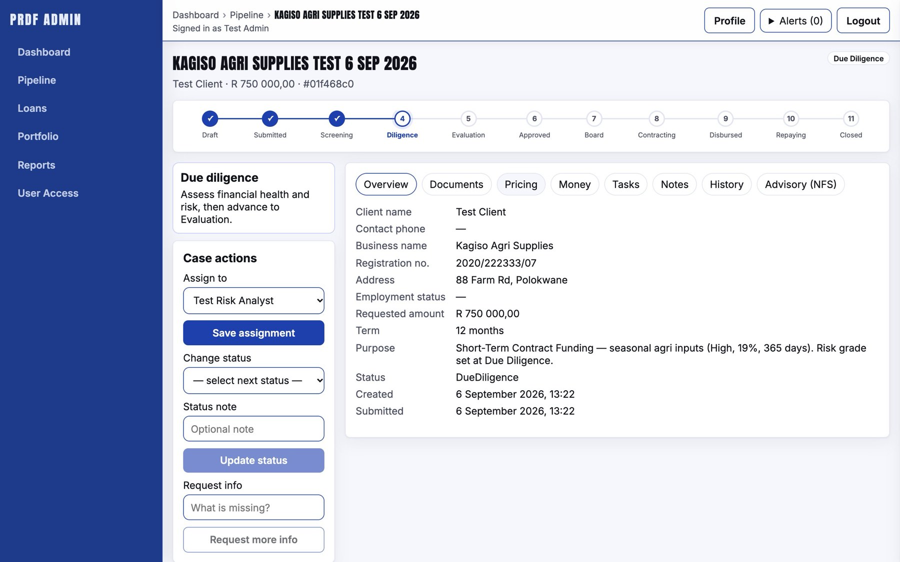
Figure 12 — Due Diligence, assigned to the Risk Analyst. This is where the risk grade is set (Section 11).
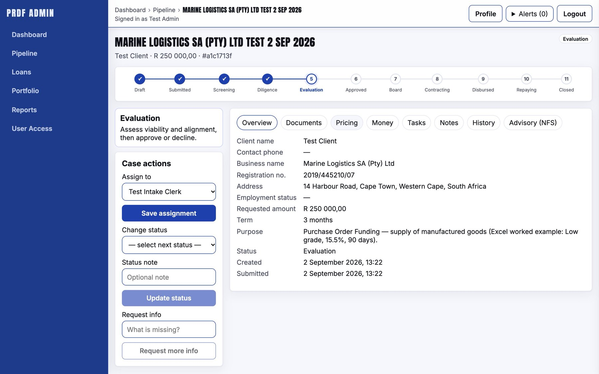
Figure 13 — Evaluation: "Assess viability and alignment, then approve or decline."
10.3 Approval, the Board, and contracting
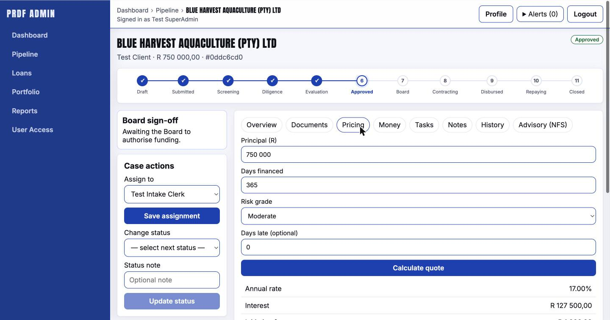
Figure 14 — Approved. The guidance changes to "Board sign-off — awaiting the Board to authorise funding." The document verification gate was satisfied to get here.
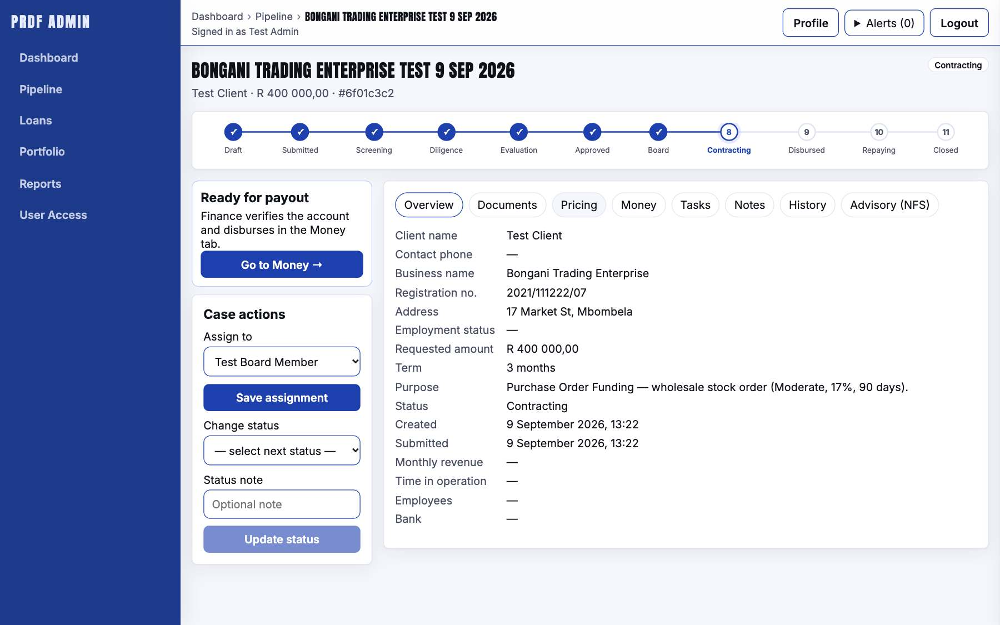
Figure 15 — Board Approved. The loan record is created at this moment, in PendingDisbursement, priced at the saved risk grade. Legal now generates the agreement.
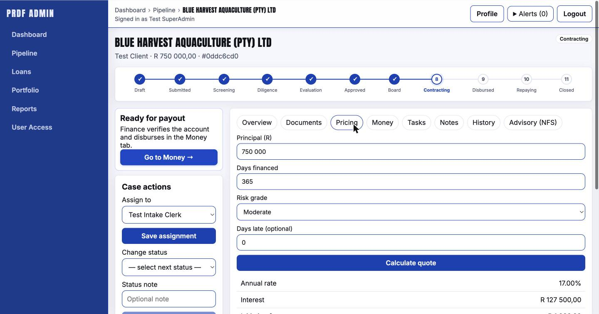
Figure 16 — Contracting. "Ready for payout" — the left rail now offers a direct link to the Money tab, where Finance pays out.
11. Pricing tab and the risk grade
The Pricing tab does two different things, and the difference matters.
The quote is a calculator. It computes and shows; it stores nothing.
The risk grade decision is stored on the application, and is what the loan is actually booked at.
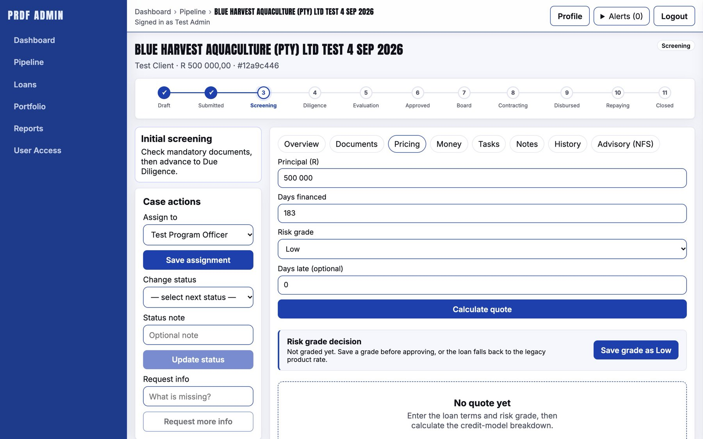
Figure 17 — An ungraded case. Note the warning: "Not graded yet. Save a grade before approving, or the loan falls back to the legacy product rate."
11.1 The inputs
Input
Notes
Principal (R)
Pre-filled from the requested amount
Days financed
Pre-filled from the term (365 ÷ 12 × months). Check it — it drives the interest
Risk grade
Low, Moderate, High or Worst. Sets the margin over Prime
Days late
For modelling a penalty. Leave at 0 for a normal quote
11.2 Saving the grade
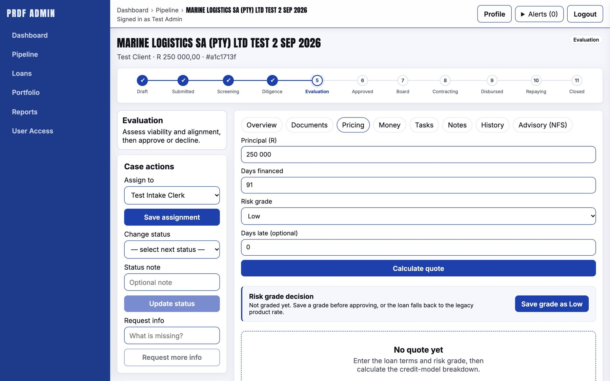
Figure 18 — Graded Moderate and quoted. The panel confirms "Saved as Moderate. The loan will be booked at this grade when the case is approved."
Choose the grade, click Calculate quote to check the numbers, then Save grade as …. The grade is stored against the application and audit-logged.
Grade the case before it reaches Board Approved. The loan is created at that point, at whatever grade is stored. If nothing is stored, it falls back to the legacy flat product rate and the case is booked at the wrong price. The warning on an ungraded case exists for exactly this reason.
The grade locks once the loan exists. After Board Approved the panel reads "This case is booked at … The grade is now fixed — a booked loan keeps the rate it was priced on," and the save button is disabled. A booked rate is a snapshot; re-grading afterwards would disagree with what the client was told.
12. The credit model in full
Four income streams, one of which only applies when a client pays late. Capital is never revenue.
Component
Formula
When
Interest
Principal × annual rate ÷ 365 × days financed
Over the term
Initiation fee
Flat R1 000
Once-off
Management fee
Principal × 3%
Once-off
Penalty
(Principal + interest) × 2% × (days late ÷ 30)
Only when late
12.1 The rate
Annual rate = Prime + the risk grade's margin. Prime is currently 10.5%.
Grade
Margin
Annual rate
Low
5.0%
15.5%
Moderate
6.5%
17.0%
High
8.5%
19.0%
Worst
10.5%
21.0%
12.2 Bullet, not amortising
Interest is simple, charged daily on the full principal, and frozen at maturity. There is no declining balance. The client makes one payment at maturity covering capital plus interest, so the repayment schedule has a single row.
12.3 Fees are deducted from the advance
The once-off fees are taken off the money paid out, not added to the schedule. This is why the model defines total due to funder as principal + interest and excludes fees.
12.4 The worked example
Item
Amount
How
Principal
R750 000,00
Requested
Annual rate
17.00%
Prime 10.5% + Moderate 6.5%
Days financed
365
12 months × 365 ÷ 12
Interest
R127 500,00
750 000 × 17% ÷ 365 × 365
Initiation fee
R1 000,00
Flat
Management fee
R22 500,00
750 000 × 3%
Net advance
R726 500,00
750 000 − 23 500 — pay out this
Due at maturity
R877 500,00
750 000 + 127 500
Total client revenue
R151 000,00
127 500 + 23 500
12.5 Late payment
There is no grace period; penalty accrues from the first day late, linearly, and never compounds on earlier penalties. For the example above:
Days late
Penalty
Total revenue
30
R17 550,00
R168 550,00
60
R35 100,00
R186 100,00
90
R52 650,00
R203 650,00
120
R70 200,00
R221 200,00
Rounding is up to the cent. This can differ from the client's spreadsheet by a cent on some totals. It is a deliberate configuration, not a defect.
13. Money tab — disbursement
Once a case reaches Contracting the left rail reads "Ready for payout" and offers Go to Money →.
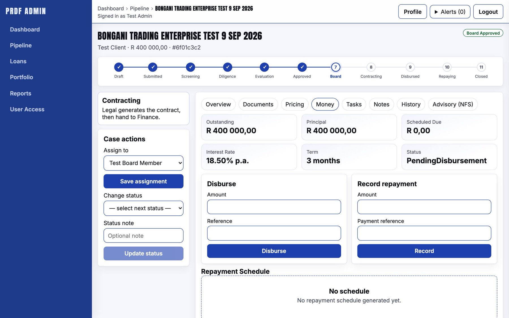
Figure 19 — The Money tab before paying out. Note the rate with its grade, the days financed, both fees, and the net advance.
Figure
Meaning
Outstanding
Capital still owed
Principal
The amount advanced
Scheduled Due
Total of the schedule — capital plus interest
Interest Rate
The booked annual rate, with the grade beneath it
Term
Months, with days financed beneath
Status
Pending Disbursement, Disbursed, In Repayment or Closed
Initiation / Management fee
The once-off fees, snapshotted at booking
Net advance
What to actually pay out — principal less the fees
Pay out the net advance, not the principal. For a R750 000 loan the client receives R726 500; the R23 500 of fees is retained. The field is labelled "pay out this amount" for that reason, and the console will not let you disburse more than it.
13.1 Disbursing
Enter the Amount — the net advance.
Enter a Reference — use the bank's payment reference so the two records reconcile.
Click Disburse.
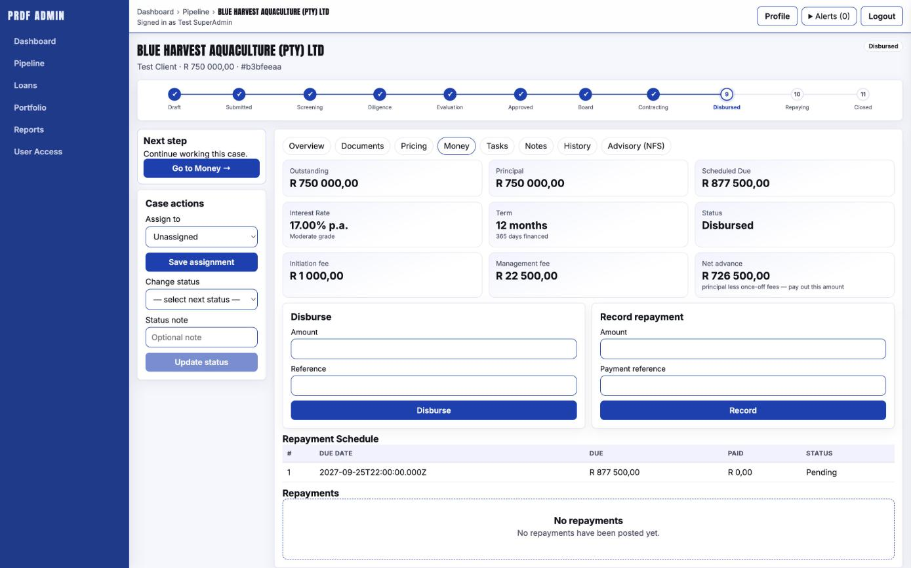
Figure 20 — After disbursing. Status Disbursed, Scheduled Due R877 500, and a single bullet instalment due at maturity.
Disbursing does four things at once: records the payment, sets the loan to Disbursed, moves the application to Disbursed, and generates the repayment schedule. The applicant sees all of it immediately in their portal — Section 22.2 shows exactly what appears on their side, including the balance question this reliably produces.
Disbursement is not reversible from the console. There is no undo. Check the amount and the reference before clicking.
14. Money tab — repayments
14.1 The repayment schedule
For a credit-model loan the schedule is a single row: the full principal plus interest, due on the maturity date. Each row shows its number, due date, amount due, amount paid, and status (Pending, Paid or Overdue).
14.2 Recording a repayment
Enter the Amount received.
Enter the Payment reference from the bank statement.
Click Record.
The payment is applied to the oldest unpaid instalment first, split into principal and interest components, and the outstanding balance reduces. Partial payments are allowed — the instalment stays Pending until fully covered.
Repayments have not been exercised end to end. Recording a repayment against the single-payment schedule PRDF uses was never tested before the system was handed over. Record the first live repayment with care and confirm the resulting balance before relying on it. This is listed in Section 24.
14.3 Moving a loan through repayment and closure
Advance the case from Disbursed to In Repayment once collection begins, and to Closed when the loan is fully settled. Both are Finance Officer transitions on the left rail.
Repayments are collected by debit order, as the client agrees in their consent declaration. The portal has no payment function by design; the console is where receipts are captured.
15. History, Tasks, Notes and Advisory
15.1 History — the audit trail
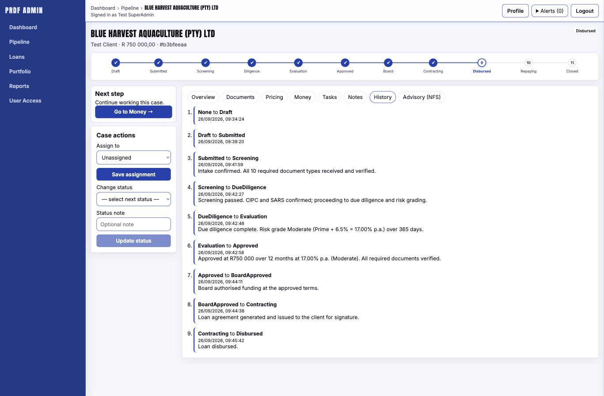
Figure 21 — Every transition, timestamped, with the note written at the time. This is the case's permanent record.
History is appended to automatically and cannot be edited. It is what you produce when a decision is queried — which is the argument for writing a real note on every transition.
Alongside status changes, the trail records document decisions and document requests, each against the name of whoever made them:
Entry
Written when
CreateDocumentRequest
You ask the applicant for a document (9.4)
CancelDocumentRequest
You withdraw that request
Status transitions
Every stage change, with your note
A withdrawn request stays in the trail rather than disappearing, so "we never asked for that" is always checkable.
15.2 Tasks
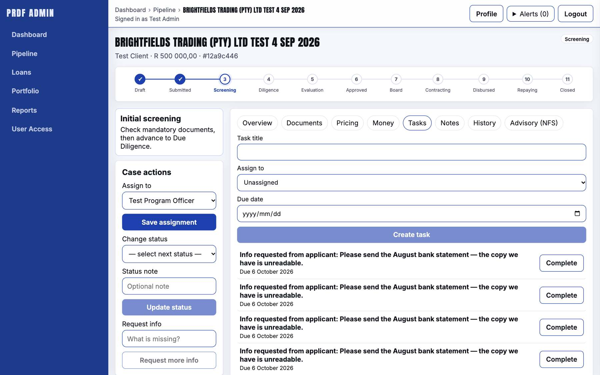
Figure 22 — Create a task with a title, an assignee and a due date.
Tasks track action items against a case. Assigned tasks appear on the assignee's dashboard under Tasks Due Today, and overdue ones generate reminders.
15.3 Notes
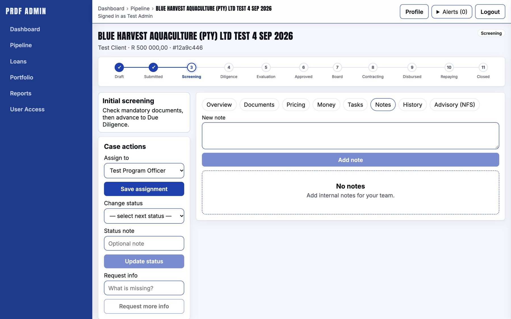
Figure 23 — Internal notes. Visible to staff only; the applicant never sees these.
Use notes for context that is not a decision — a phone call, a concern, something to watch. Use a status note for the decision itself, so it lands in History.
15.4 Advisory (NFS)
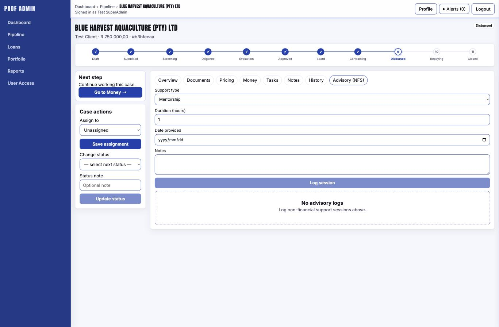
Figure 24 — Logging a non-financial support session: type, duration, date and notes.
PRDF's mandate includes non-financial support — mentorship, compliance help, training. Logging sessions here is what makes that reportable as development impact rather than an untracked favour.
16. Loans and Portfolio
16.1 Loans
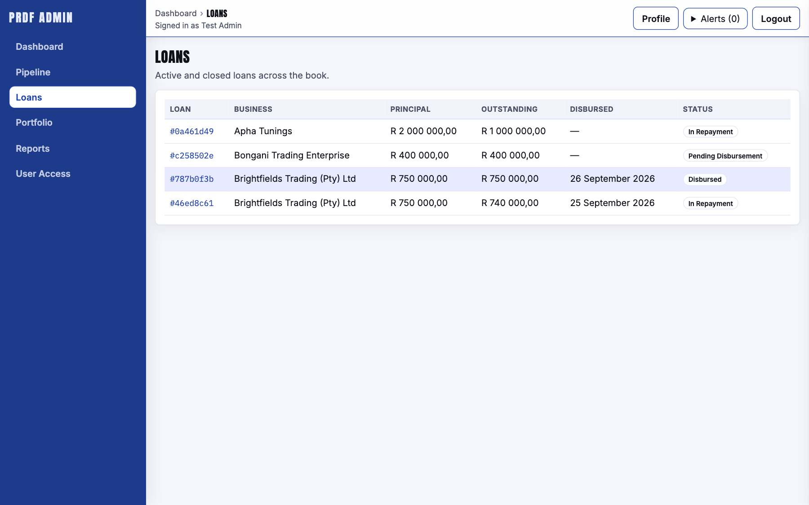
Figure 25 — Every loan on the book, with principal, outstanding, disbursement date and status.
Click a loan reference to open its account. This is the book-wide view; the Money tab is the same loan seen from its case.
16.2 Portfolio
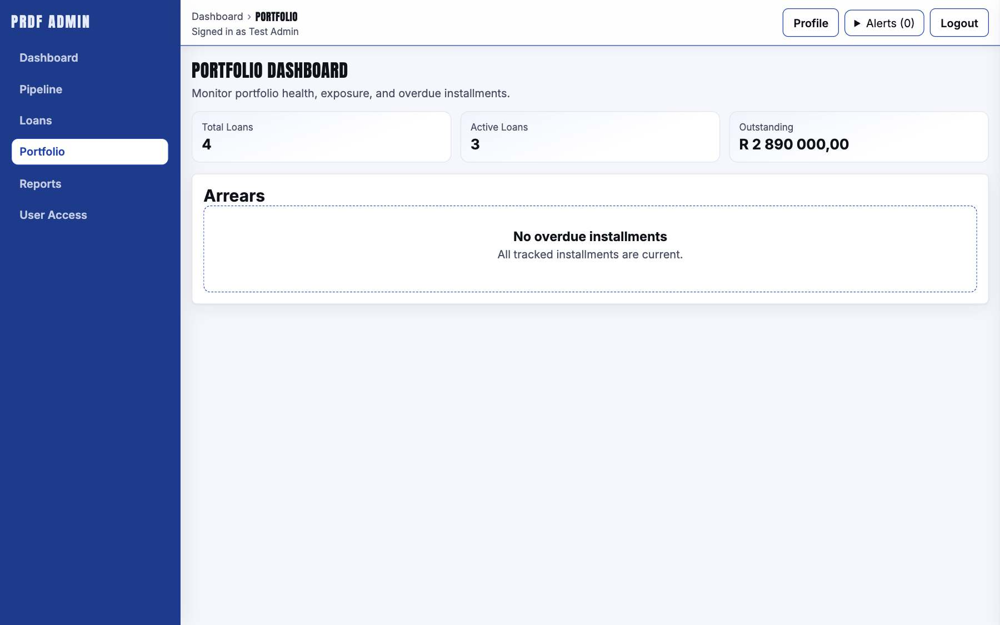
Figure 26 — Portfolio health: total loans, active loans, total outstanding, and arrears.
Arrears lists every overdue instalment across the book. An empty arrears panel is the goal; anything in it needs collections attention.
Export CSV downloads the portfolio for reporting or reconciliation outside the system.
Check arrears before month end. Penalties accrue daily with no grace period, so a missed instalment gets more expensive for the client every day it is left. Early contact is cheaper for everyone.
17. Reports
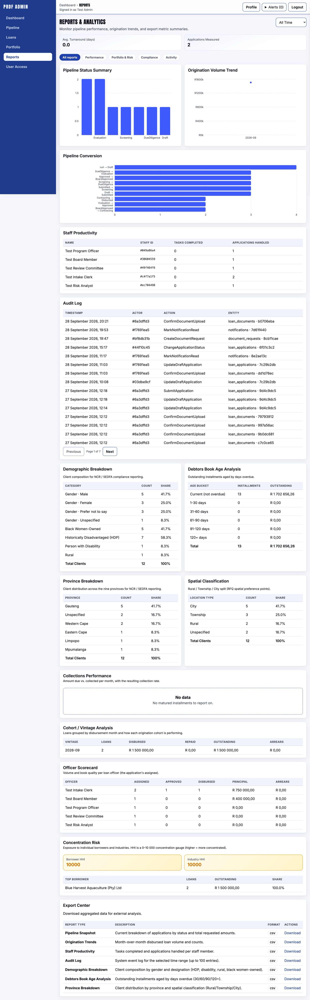
Figure 27 — Reports. Five report groups, a period selector, and export.
The two headline figures are Average turnaround in days and Applications measured. The period selector at the top right scopes everything on the page.
17.1 The charts
Pipeline Status Summary — how many cases sit at each stage. Tall bars in the middle mean a bottleneck.
Origination Volume Trend — value originated over time.
Pipeline Conversion — how many cases made each transition. Where the bars narrow is where applications are being lost.
Staff Productivity — tasks completed and applications handled, per person.
Reports are visible to management roles only — SuperAdmin, Admin, Program Manager and Board. Stage workers do not see this page, deliberately: it aggregates across cases they have no business seeing.
18. User Access
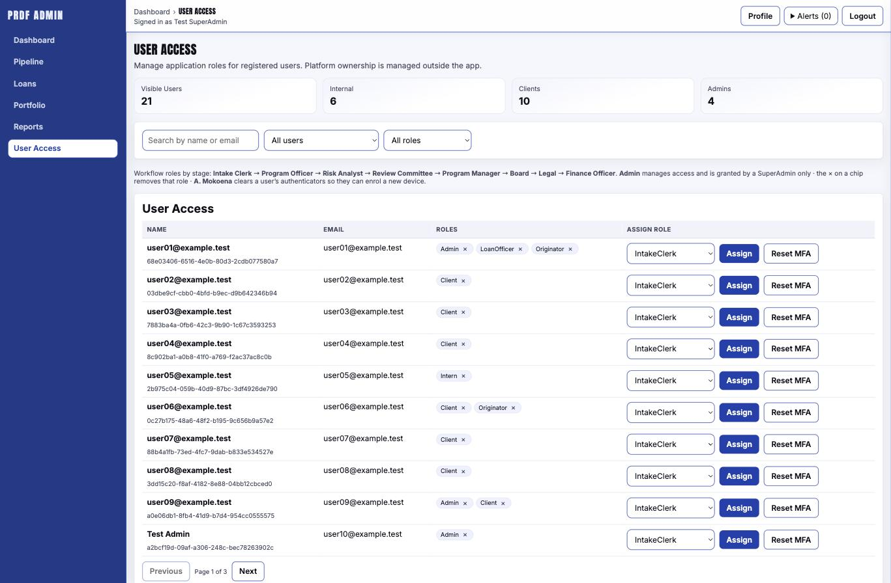
Figure 28 — User Access, showing the first four accounts. Names and email addresses have been withheld from this screenshot; on the live screen you see each person's real name and address.
Four counters summarise the account base: visible users, internal users, clients, and admins. Search by name or email, and filter by user type or role.
18.1 Granting and removing roles
To grant: choose a role in the Assign Role dropdown on that person's row and click Assign.
To remove: click the × on the role chip.
Reset MFA clears that user's authenticators so they can enrol a new device. Use when someone loses their phone.
18.2 The rules
Rule
Why
The Client role cannot be assigned here
It is granted by registering in the portal. Staff must not be able to make a colleague a borrower
Only a SuperAdmin may grant Admin
Administrative access is the keys to the system
Platform ownership is managed outside the app
Noted on the screen itself
This screen shows real personal data. Live email addresses and names of applicants and staff. Do not screenshot it into documents, tickets or chat without masking, and apply the same care you would to any personal information under POPIA.
Least privilege. Grant the narrowest role that lets someone do their job, and remove roles when people change duties. Every extra Admin is another account that can move money and change access.
19. My Profile and notifications
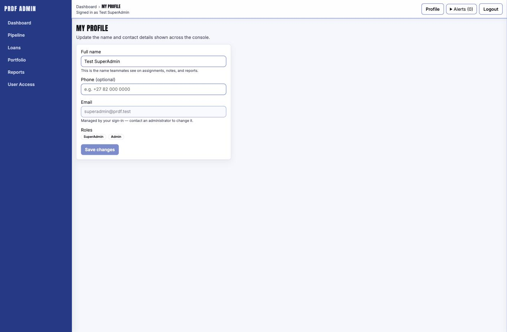
Figure 29 — Your profile. Name and phone are editable; email and roles are not.
Your full name is what colleagues see on assignments, notes and reports, so keep it accurate. Phone is optional. Email is managed by your sign-in and can only be changed by an administrator. Roles are shown for reference.
19.1 Notifications
The bell in the top bar carries a count of unread items. Notifications are raised on status changes, and by scheduled scans for arrears, due tasks and stale cases.
Notifications are in-app only. Nothing is emailed or texted, to staff or to applicants. If a case is waiting on someone, the system will not chase them — the dashboard SLA counter and the arrears panel are your early warning. Adding email delivery is listed in Section 24.
20. What the client sees
Understanding the applicant's view makes support calls much shorter. The Client Portal is documented in full in its own manual; this is the summary. Sections 21 and 22 then show the screens you personally cause to change.
Their screen
What it shows
Landing page
A calculator quoting the cheapest rate, marked indicative
Eligibility check
Self-assessment against PRDF's criteria. Not recorded, not sent to you
Apply
Five steps: business profile, financials, loan details, documents, review
Consent declaration
Twelve POPIA, policy and terms statements, all must be YES
Home
Current application, three figures, recent activity
Applications
Every application they have made. A submitted one opens read-only; a draft resumes in the wizard
Documents
Their checklist, with your Verified/Rejected badges
Status
Six milestones, any documents you have requested, plus a repayment summary once funded
My Loans
Loan account, schedule and repayment history
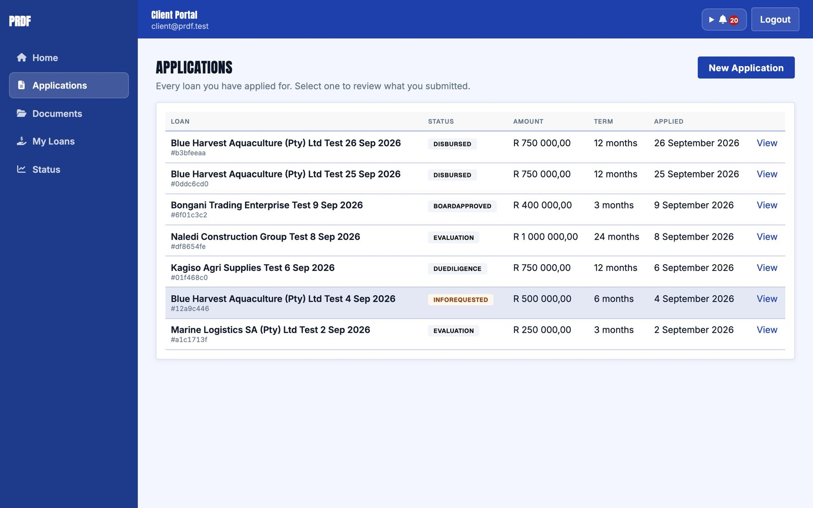
Figure 30 — The applicant's Applications list. Until recently this redirected them into the apply wizard, so they had no way to see what they had already sent you.
Opening a submitted application shows them a read-only copy of what they sent — the same five sections, with no edit controls. This is a real restriction rather than hidden buttons, so a submitted application cannot be altered from the portal at all.
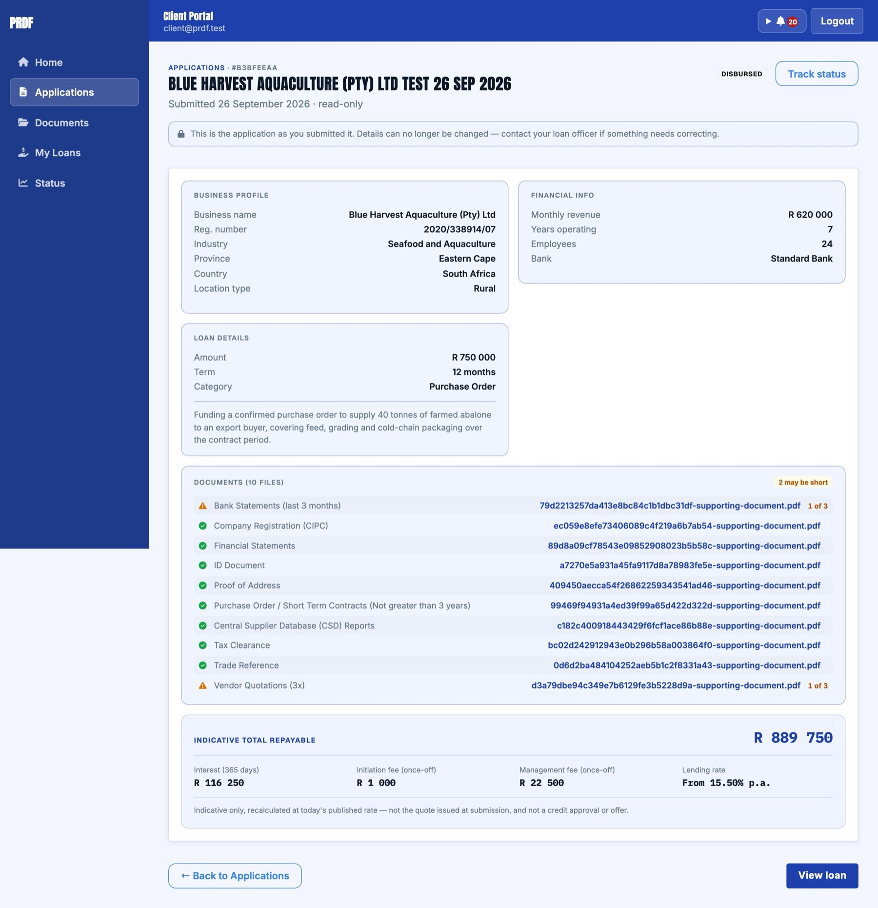
Figure 31 — A submitted application as the applicant sees it. What is shown is a snapshot taken at submission, so a later application cannot retroactively change what an earlier one says.
20.1 Where their view differs from yours
They see six milestones; you see eleven stages. This is not a tidy simplification — six of your statuses map to no milestone at all and blank their whole timeline. The mapping is set out in 21.3 and it is worth knowing before you take a call about it.
They see the rate as "from 15.50%" until the loan is booked; you see the actual grade.
They cannot edit anything after submitting.
They cannot pay through the portal.
Expect this support call. "The tracker says nothing has happened." While a case sits in Screening, Due Diligence, Evaluation, Board Approved or Contracting, the client's timeline shows every milestone greyed out — including "Application Submitted". Their status badge is correct; the circles are not. Reassure them and quote the status label. This is item 1 in Section 24.
21. Your action, their screen
This section pairs the things you do with what the applicant sees when you do them. It exists because two questions come up constantly and neither is answered by looking at the console alone: if I click this, what happens on their side? and they are phoning about something — what are they looking at?
Only screens you cause are shown here. The landing page, the calculator, the eligibility check and the five wizard steps happen before you are involved and live in the Client Portal manual instead.
21.1 You request a document
You raise the request in 9.4. On their side it arrives as a panel at the top of the status card for that application, with an upload box attached to each outstanding item.
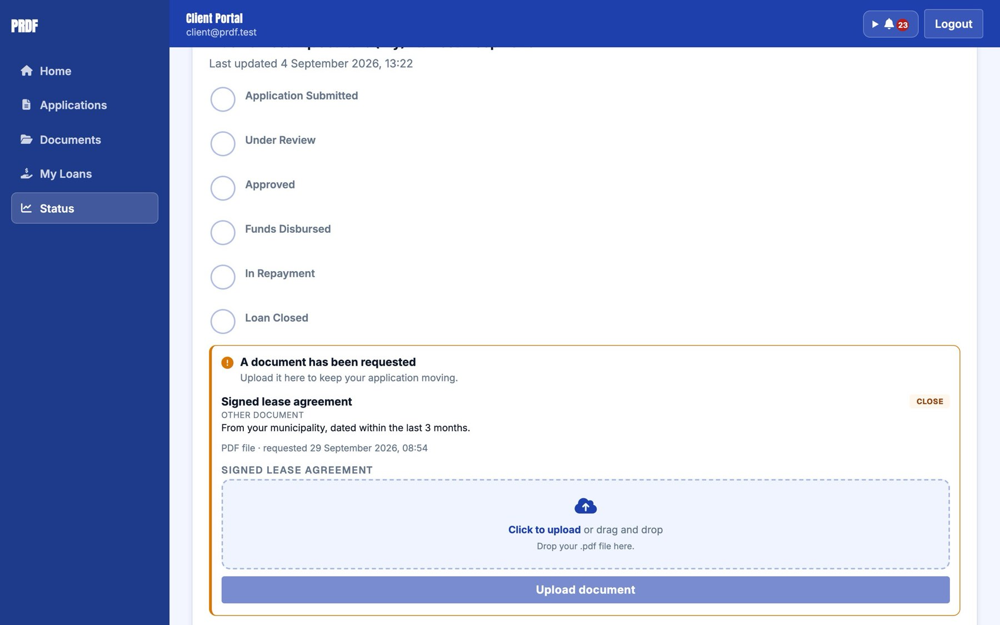
Figure 32 — The applicant's status page with one document outstanding. The name, your Details text and the file type you chose all come straight from the dialog in Figure 8.
Three things are worth knowing when this comes up on a call:
They get an in-app notification as well as the panel. It is one of only two notifications the portal sends them — see the table in 21.5.
The upload box only accepts the file type you picked. If they say "it won't let me attach it", check what you chose in the File type field before anything else.
The panel is not tied to Info Requested. It shows on any status, so an applicant can be asked for a document while their case is still progressing normally.
When they upload, the ask closes itself and the document appears on your Documents tab for verification.
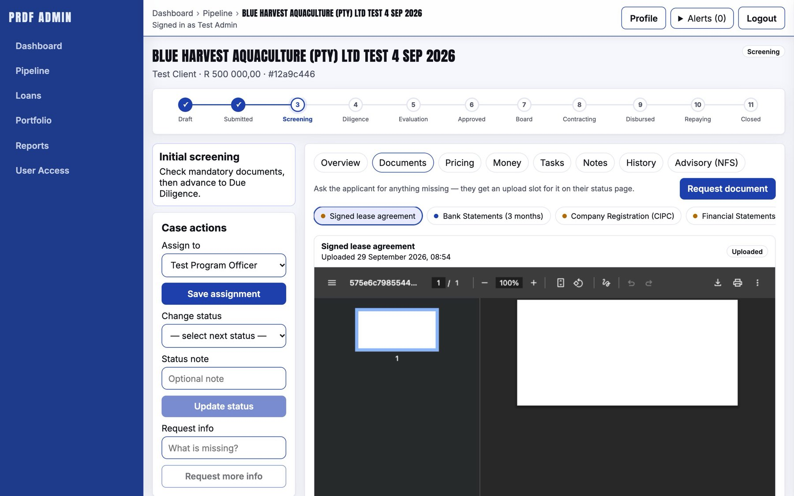
Figure 33 — The same case once the applicant has answered. The request is satisfied and the document is now waiting on your Verify / Reject decision.
21.2 You verify or reject a document
Your decision in 9.2 and 9.3 shows against that document on their Documents page, as a badge.
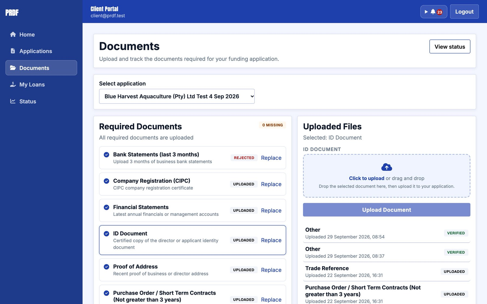
Figure 34 — The applicant's Documents page. Your decisions appear as badges against each document; a rejected one keeps its Replace link so they can send a new copy.
Note the Select application picker at the top. An applicant with more than one application sees the documents for whichever is selected, which is not necessarily the case you are discussing — worth confirming at the start of a call.
Neither one notifies them. Verifying and rejecting change the badge silently. An applicant who is not already looking at the page will not know you rejected something — so if a rejection is blocking the case, raise a document request or a Request info alongside it, or telephone them.
21.3 You move the case forward
Your eleven stages do not collapse neatly into their six milestones. Six of your statuses are not in the tracker's vocabulary at all, and when a case is in one of them the applicant's entire timeline goes blank — every milestone grey, including the "Application Submitted" they have already passed. Only their status badge stays correct.
Your stage
Their timeline shows
What they are told
Draft
No timeline
A draft card inviting them to resume
Submitted
Application Submitted, active
Received, awaiting review
Screening
Nothing — all six grey
No visible progress at all for the whole of your review. This is the complaint in 21.6
Due Diligence
Evaluation
Info Requested
Under Review, active
"Action required", with your note. Paradoxically the clearest their timeline looks during review
Approved
Approved, active
Approved — but see 21.4, this is not money
Board Approved
Nothing — all six grey
Approval appears to be withdrawn: the timeline they saw a moment ago goes blank again
Contracting
Disbursed
Funds Disbursed, active
Funds released; My Loans becomes populated
In Repayment
In Repayment, active
Balance and schedule visible
Closed
Loan Closed, active
Fully repaid
Rejected
Nothing — all six grey
They are not told they were declined. The timeline simply blanks
Read the Board Approved and Rejected rows twice. An applicant watching their tracker sees "Approved" light up, and then — when you move the case to Board Approved, which is forward progress — watches it go blank again. A declined applicant is never told they were declined by the timeline at all. Neither is a display quirk you can leave to explain itself on a call: if you decline a case, telephone them, and if you are moving an approved case onward, warn them their tracker will appear to reset.
The reason is simple enough: the tracker was only ever taught five of the eleven stages a case can be in. When a case reaches a stage it does not recognise, it cannot tell which milestones have been passed, so it greys out all of them rather than guessing. It is the first item in Section 24 and the most worthwhile thing on that list to fix.
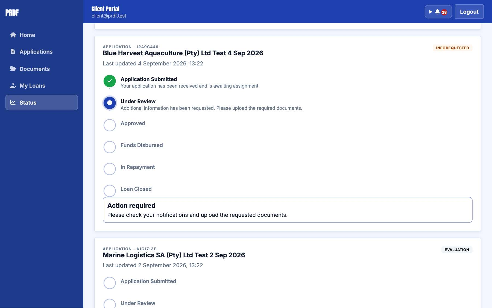
Figure 35 — Info Requested is the one review stage that looks different to them: an "Action required" block appears above the timeline.
The figure below is the whole effect in one screen — the same applicant's status page with seven applications on it, at seven different stages.
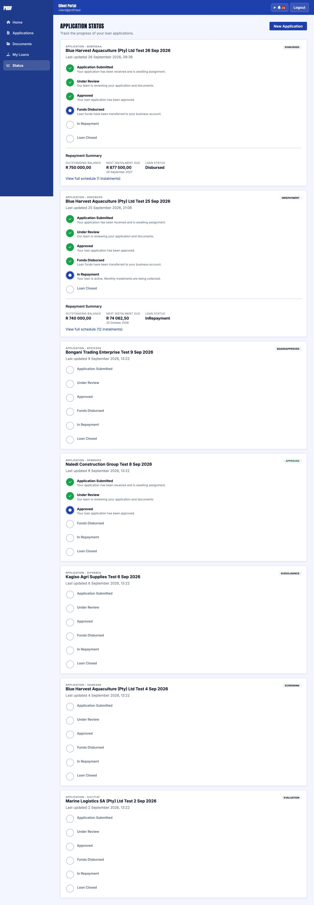
Figure 36 — Evidence for the table above. Reading down: Disbursed and In Repayment render correctly; Board Approved is entirely blank; Approved renders correctly; Due Diligence, Screening and Evaluation are all blank. Four of the seven tell the applicant nothing at all, and the blank one sits directly below a correct one from the same business.
21.4 You approve, or decline
Approval renders properly — the Naledi Construction card in the figure above shows Submitted and Under Review ticked with Approved active. It is the step after approval that causes trouble, because moving the case to Board Approved blanks that same timeline (21.3).
Approving also does not release funds and does not create anything they can act on. Between your Approved and their money there is still Board Approved, Contracting and disbursement. Applicants routinely read "Approved" as "paid", so it is worth saying explicitly on the call — and worth warning them that their tracker is about to go blank.
A declined applicant is not told. Rejected is not in the tracker's vocabulary either, so declining a case blanks their timeline exactly as Screening does. There is no "not approved" state on their side and no notification that says it in plain words. Telephone anyone you decline.
21.5 Which of your actions actually notify them
The portal sends the applicant only two kinds of in-app notification. Everything else changes quietly and is only noticed if they happen to look.
Your action
Notifies?
What they see
Request a document (9.4)
Yes
Notification plus the upload panel in 21.1
Change the case status (10)
Yes
Notification; milestones redraw per 21.3
Request info (left rail)
Yes, as a status change
"Action required" block
Verify a document
No
Badge changes silently
Reject a document
No
Badge changes silently, slot reopens
Assign the case to a colleague
No
Nothing — internal only
Add a note, task or advisory entry
No
Nothing — internal only
Set or change the risk grade
No
Nothing until the loan is booked
Record a repayment (14.2)
No
Balance and history update silently
21.6 The support calls this produces
They say
They are looking at
Check
"Nothing has happened for weeks"
Status page, all milestones grey
The known display fault in 24.1 — quote them the status badge instead
"I was approved, where is my money?"
Status page, Approved
Whether the case has reached Disbursed — see 21.4 and Section 22
"It won't let me upload the file"
The panel in 21.1
The File type you chose on the request
"I don't know what you want from me"
An empty or vague request
The Details text on the request — reissue it with specifics
"You rejected it but didn't tell me"
Documents page
Correct — rejection is silent. See the warning in 21.2
"I can't fix a mistake on my application"
Read-only submitted application
Correct and enforced server-side. They cannot edit; you amend it for them
"How do I pay?"
My Loans
There is no payment function in the portal. Collection is by debit order and you record the receipt — see 22.4
22. After approval — the client's loan
Everything to this point has been an application. From disbursement onward the applicant has a loan account, and their portal changes shape. This section follows that from their side, in the order they experience it.
22.1 Approved, but nothing has moved
Covered in 21.4 and repeated here because it generates more calls than anything else: Approved is not funded. Their status reads Approved through your Approved, Board Approved and Contracting stages. My Loans is still empty. There is nothing for them to do and nothing for them to see beyond the milestone.
22.2 You disburse — their loan appears
The moment you record disbursement in 13.1, three things change for them at once: the Disbursed milestone lights up, Home starts showing an outstanding balance, and My Loans stops being empty.
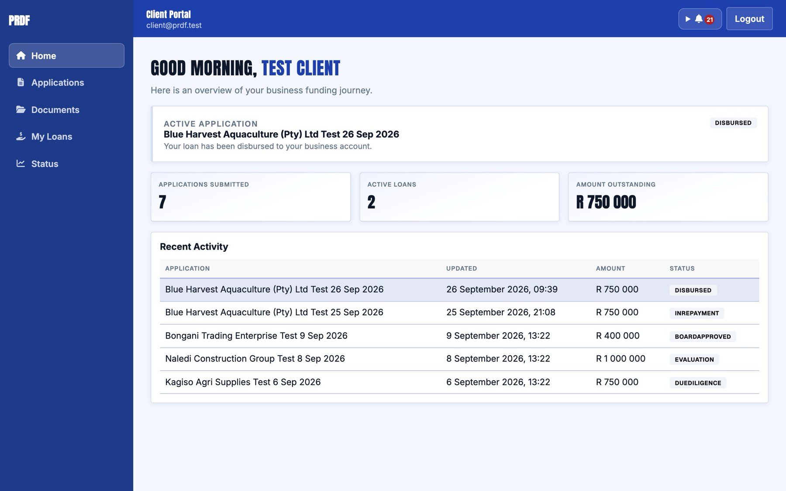
Figure 37 — Home after disbursement. The outstanding figure is the full amount owing, not the amount advanced — fees were deducted from the advance but are owed in full.
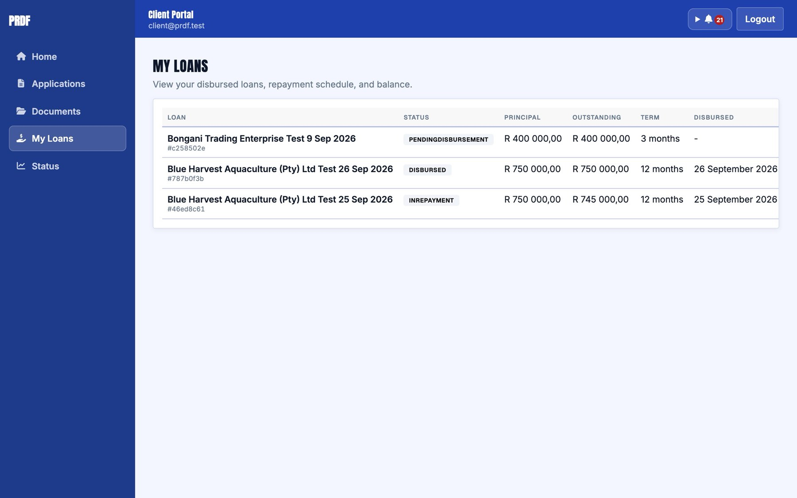
Figure 38 — My Loans. The loan carries the same derived name as the application it came from, so the two reconcile.
Expect a question about the amount. A client who asked for R500 000 receives less than that in their bank account — the initiation fee and the management fee are deducted from the advance, as Section 12.3 explains — but the balance shown here is what they owe, which is the full principal plus interest. The two numbers are both correct and they will not look it. Section 12.4 has the worked example to read out.
22.3 What they can see about the loan
Opening the loan shows the account and its repayment schedule: what is due, when, and what has been paid.
Figure 39 — The loan account. For a bullet loan this is a single instalment; for a term loan it is one row per month.
22.4 The first payment
Repayment is collected by direct debit order, which is what the applicant agreed to in their consent declaration. Collection happens outside the system, and the portal has no payment function — there is no card capture, no way to set up or amend the debit order, and no "pay now" button anywhere in it. The loan only reflects a collection once you record it on the Money tab.
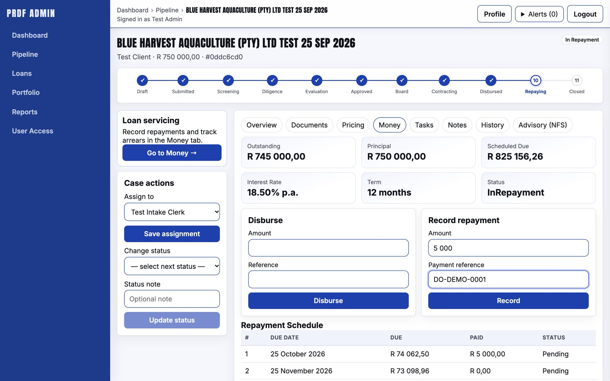
Figure 40 — Your side: recording the receipt against the instalment in 14.2.
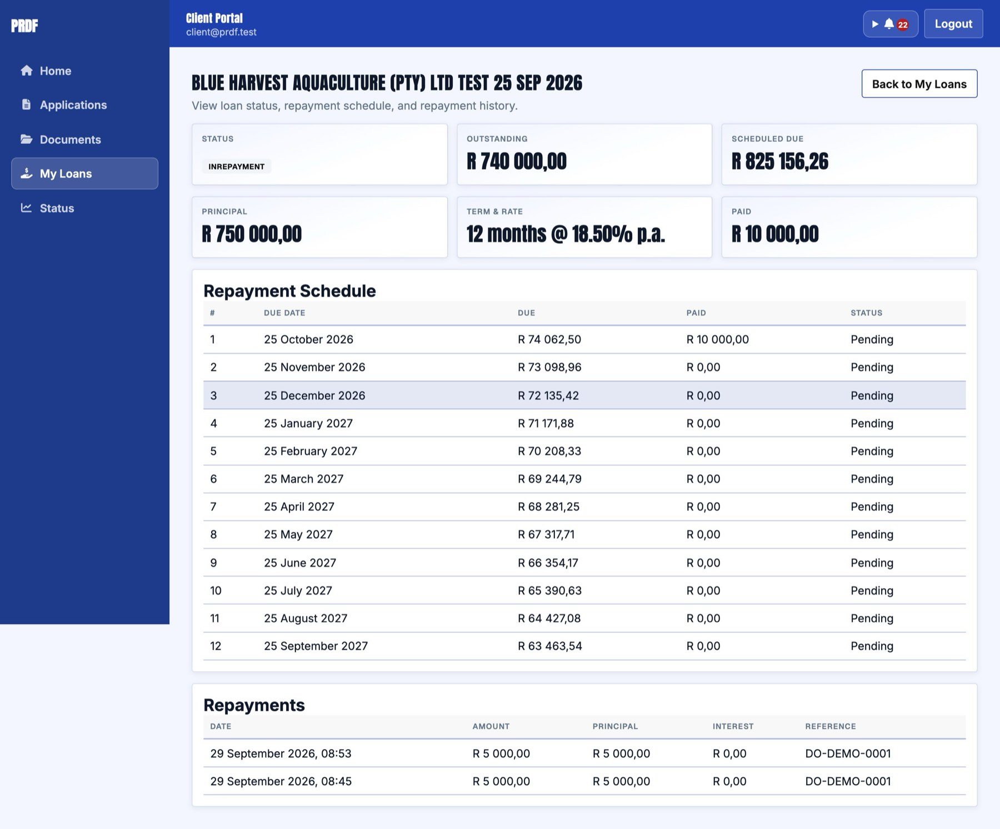
Figure 41 — Their side, immediately afterwards. The instalment is settled, the history has a row, and the outstanding balance has come down.
Until you record it, they see nothing. An applicant who paid on Friday and checks on Monday will see an unchanged balance and an instalment still outstanding, and will reasonably conclude the payment was lost. This is the single most avoidable complaint in the system: record receipts promptly, because the portal has no other way of knowing.
22.5 Through repayment to closure
In repayment. Each receipt you record reduces the balance and adds a history row. Nothing notifies them.
Falling behind. Overdue instalments appear on your Portfolio ageing report (16.2). Penalties accrue daily with no grace period, per Section 12.5. The applicant sees the increased balance but gets no warning before it happens.
Settled. When the loan closes, their milestone moves to Closed and the loan stays visible in My Loans as a record.
What the applicant can never do. Pay through the portal, edit a submitted application, change their banking details, upload a document nobody asked for once the application has left Draft, or see your internal notes, tasks, assignments, risk grade or advisory entries. If they need any of those, they need you.
23. What you can change yourself
Some of the numbers and rules in this system are settings, not part of how it is built. They can be changed without anyone rewriting the system, and the change takes effect across both the console and the client portal within about half an hour. Knowing which is which saves a great deal of time: if a value is in the first group below, you do not need to wait for a software release to change it.
You will not change these yourself from the console — there is no settings screen for them yet. You ask PRDF’s technical contact, who makes the change directly. The point of this section is that you know what is possible, and roughly what to expect when you ask.
What can change
How quickly
What it affects
The smallest and largest loan, and the shortest and longest term
Same day
The calculator on the public website, and what the application form will accept
Which documents an applicant must supply
Same day
The applicant’s document checklist, and what blocks approval
The Prime rate, the initiation fee and the management fee
Same day
Every new quote and every new loan from that moment on
How much each risk grade adds to the rate
Same day
Pricing on cases graded after the change
The wording of the eligibility criteria
Needs a software release
The public eligibility check
The wording of the declaration applicants sign
Needs a software release
What new applicants agree to
23.1 Changing the smallest and largest loan
The calculator, the application form and the checks behind them all read the same pair of figures. Change them once and everything follows — the sliders on the public site, the amount the form will accept, and the check that runs when a case is saved.
Tightening the range catches existing cases late. If you reduce the maximum, an application already in the pipeline for more than the new figure is not rejected straight away. It carries on normally until the next time someone saves a change to it, and then it fails. So after tightening a range, ask for a list of live cases that now fall outside it, and re-quote those deliberately rather than discovering them one at a time.
23.2 Changing the Prime rate or the fees
When Prime moves, this must be updated. Everything PRDF quotes publicly is expressed as “Prime plus a margin” rather than as a fixed percentage, precisely so that the quote stays truthful when Prime changes — but only if the stored Prime rate is kept current.
The same setting holds the initiation fee, the management fee percentage, the penalty rate and the penalty period.
Loans already on the book are not affected. When a loan is paid out, its rate, its fees and its interest are written onto that loan and fixed there. Changing the settings afterwards never re-prices a loan that has already been sold, so you can update Prime without worrying about disturbing existing agreements.
23.3 Changing which documents are required
Documents can be added to or removed from the required list at any time. A document type that has never been used before also needs a proper name added to the system, otherwise it appears on screen under an internal label that will mean nothing to the applicant. Mention it when you ask.
23.4 Changing the declaration applicants sign
The declaration can be reworded, but it is not a casual edit. Every applicant’s agreement is stored against the exact wording they were shown, so the wording carries a stamp that must be updated at the same time. That is what lets PRDF demonstrate, later, precisely what any given applicant agreed to.
The present wording has not been through legal review. It is recorded and stamped correctly, so nothing is lost, but it has not been signed off by a lawyer. This is listed in Section 24.
24. Things to be aware of
Every system has rough edges, and it is better to know about them than to meet them during a client call. None of the points below stops an application being assessed, approved or paid out. They are listed here so that what PRDF is accepting is clear, and so that you recognise each one if it happens to you.
The first group affects what your applicants see, so it is the group most likely to generate a phone call.
24.1 Things your applicants will notice
What happens
What it means for you
The applicant’s progress tracker goes blank at most stages
The tracker only recognises five of the eleven stages a case can be in. At any other stage — Screening, Due Diligence, Evaluation, Board Approved, Contracting, or when a case is declined — every circle turns grey, including the ones the applicant has already passed. The status wording beside it stays correct throughout. Two consequences are worth remembering: moving an approved case onward to Board Approved makes it look as though approval has been withdrawn, and a declined applicant is shown nothing that says so. This is the most important item on the list. See 21.3 and 21.6.
A declined applicant is not told
There is no screen or message that says “not approved”. Telephone anyone you decline, and follow up in writing.
Rejecting a document is silent
The badge changes in the applicant’s portal, but nothing tells them to go and look. Raise a document request at the same time, or telephone. See 21.2.
Nobody is notified outside the system
There are no emails and no SMS messages — neither to applicants nor to staff. Everything is a message inside the portal or the console, which only reaches someone who signs in. Until this changes, treat the telephone as part of the process.
An applicant cannot reset their own password
The reset email links to a page that has not been built. They must ask PRDF, and an administrator resets it for them.
The figure on the applicant’s home screen can differ from their loan
Their home screen adds up what they asked for, which is not the same as what they owe. Their loan account is the authoritative figure — quote that one.
24.2 Things to be careful about internally
What happens
What it means for you
Repayments have not been tested from end to end
Recording a repayment against the single-payment schedule PRDF uses has never been done on a real loan. Record the first live repayment carefully and check the resulting balance before relying on it.
The declaration wording has not been through legal review
It is recorded and stamped correctly against each applicant, but a lawyer has not approved the words. See 23.4.
There is no limit on the size of an uploaded file
Files go straight to storage without passing through the system, so nothing currently checks how large they are. This is a setting that can be switched on without changing the software.
Staff are not required to use a second security factor
Two-step sign-in can be set up and reset, but nobody is obliged to use it — including the people who can move money. Worth requiring for those roles.
Loans paid out before 26 September 2026 were priced the old way
They carry a flat rate, instalments rather than a single payment, and no fees. They have deliberately been left exactly as they were rather than rewritten. Any that need the current pricing must be re-quoted on purpose.
A term in months is charged in days
Three months is charged as 91 days rather than 90, which adds about 1 % to the interest on that quote. This is deliberate: treating every month as 30 days would under-charge a full year by five days.
Checks before a release are done by hand
There is no automatic suite that re-tests the system after a change, so a change in one place can disturb another without anyone being warned. Until that exists, test the lifecycle and the money screens after any update.
25. Acceptance and sign-off
This section records PRDF's acceptance of the Admin Console as delivered and documented in this manual.
25.1 Acceptance checklist
✓
Item
Section
☐
Staff can sign in; a Client-only account is correctly refused
4
☐
Dashboard counters and the assigned queue populate correctly
6
☐
Pipeline search and every status filter return the right cases
7
☐
A case opens with its rail, guidance and all eight tabs
8
☐
Documents can be viewed, verified and rejected
9
☐
Approval is refused while any required document is unverified
9.2
☐
Legal transitions succeed; illegal jumps are refused
5, 10
☐
The risk grade saves, drives the booked rate, and locks once booked
11
☐
A quote matches the worked example to the cent
12.4
☐
Late-payment penalties compute correctly at 30/60/90/120 days
12.5
☐
Disbursement pays the net advance and generates a bullet schedule
13
☐
A repayment records and reduces the outstanding balance
14
☐
History shows every transition with its note
15.1
☐
Tasks, Notes and Advisory entries persist
15
☐
Loans, Portfolio and arrears reflect the book
16
☐
Reports render and are hidden from stage workers
17
☐
Roles can be granted and removed; Client is absent from the dropdown
18
☐
A requested document reaches the applicant as an upload slot and closes when they answer
9.4, 21.1
☐
Cases and loans are named consistently across the console and the portal
7, 16, 22.2
☐
Configuration changes take effect without a release
23
☐
The limitations in Section 24 have been read and accepted
25
25.2 Declaration
By signing below, PRDF confirms that:
The Admin Console described in this manual has been delivered and demonstrated.
The acceptance criteria in 25.1 have been verified.
The known limitations in Section 24 have been disclosed, read and accepted.
This manual, with the Client Portal User Manual, constitutes the system documentation.
The work is complete and accepted.
25.3 Signatures
Accepted on behalf of PRDF
Full name
Position
Signature
Date
Delivered by
Full name
Position
Signature
Date
Conditions or exclusions to this acceptance
Record anything accepted subject to a condition, or excluded from this sign-off.
PRDF Admin Console — Administrator’s Manual, 1 October 2026.